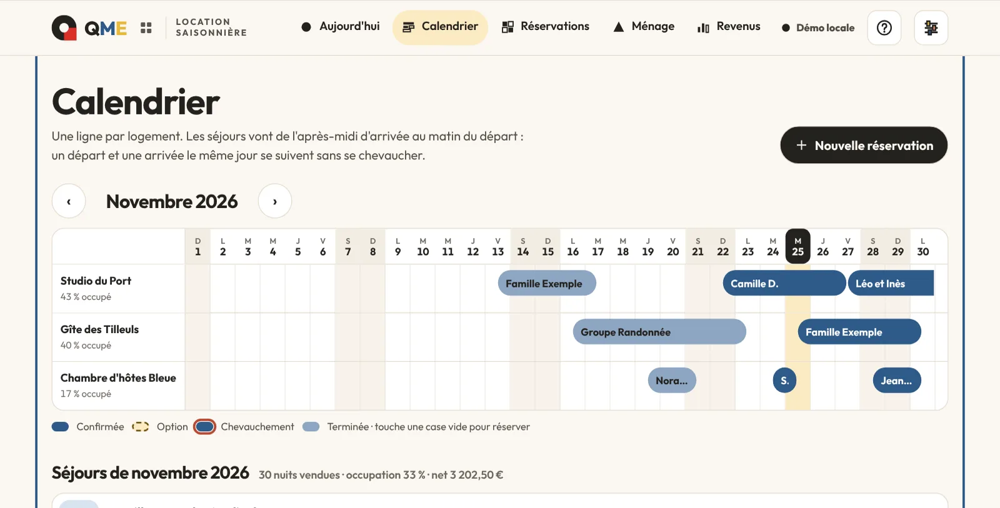
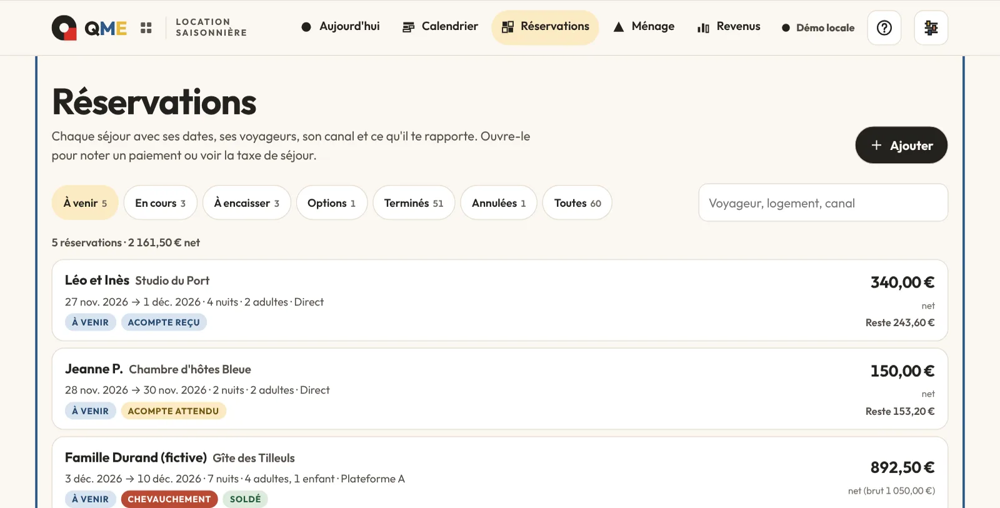
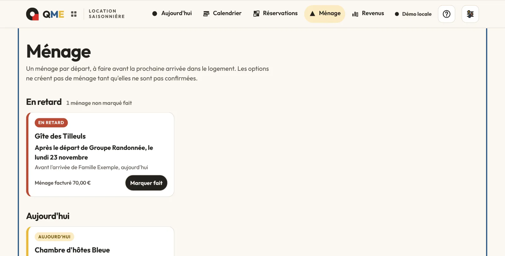
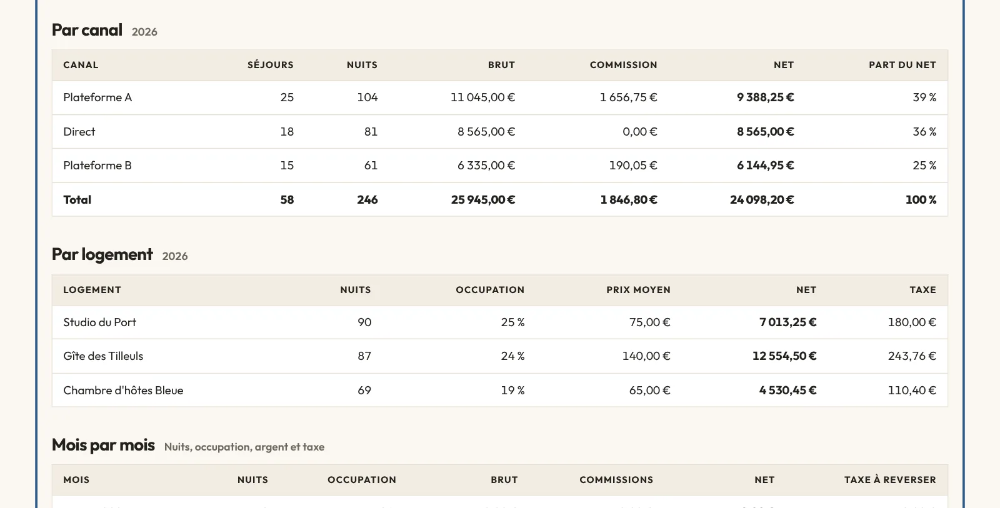

Concept pour les gîtes, chambres d'hôtes et meublés de tourisme · gestion prête à l'emploi
Chaque nuit réservée une seule fois, chaque euro compté.
Un outil en ligne déjà prêt pour les gîtes, les chambres d'hôtes et les meublés de tourisme de 1 à 10 logements : un calendrier qui réunit les réservations de tous vos canaux sans double réservation, le ménage calé entre deux séjours, la taxe de séjour calculée au tarif de votre commune et ce qui vous reste vraiment, canal par canal, après commissions. Il s'utilise tel quel dès le premier jour, et je peux l'adapter sur mesure à votre façon de travailler.
La démo ouvre une activité fictive (trois logements, trois canaux de réservation, six mois d'historique), sans inscription. Elle reste dans votre navigateur et n'envoie rien. Toutes les données affichées sur cette page sont fictives.
Le quotidien
Des réservations qui arrivent en direct, par téléphone et par une ou deux plateformes, un calendrier par canal, le ménage à caler entre un départ et une arrivée, et la taxe de séjour à déclarer.
Ce que cela coûte
Deux séjours sur les mêmes nuits, un ménage oublié avant une arrivée le jour même, une taxe recalculée à la main, et aucune idée claire de ce que rapporte chaque canal une fois les commissions payées.
Ce que fait l'outil
Il refuse les doubles réservations, crée le ménage après chaque départ, calcule la taxe de séjour et le net de chaque séjour, puis réunit tout par canal, par logement et par mois.
01 · Calendrier
Tous vos canaux sur un seul calendrier
Une ligne par logement, une colonne par jour : les séjours vont de l'après-midi d'arrivée au matin du départ.
- Deux réservations confirmées sur les mêmes nuits : l'enregistrement est refusé
- Une option qui en chevauche une autre est signalée
- Un départ et une arrivée le même jour se suivent sans conflit

02 · Réservations
Chaque séjour, son canal et ce qu'il rapporte
Voyageurs, dates, nuits, canal, état du paiement, net et reste à encaisser, avec des filtres pour ne voir que l'essentiel.
- Brut, commission du canal et net calculés pour chaque séjour
- Taxe de séjour : personnes imposables × nuits × tarif de votre commune
- Acompte et solde suivis, paiements datés

03 · Ménage
Le ménage calé entre deux séjours
Un ménage est créé après chaque départ, à faire avant la prochaine arrivée dans le logement.
- En retard, aujourd'hui, dans les quatorze jours
- Rotation le jour même repérée
- Check-list type, marquée faite en un geste

04 · Revenus
Ce que rapporte vraiment chaque canal
Net par mois, occupation, prix moyen par nuit et taxe de séjour, puis les mêmes chiffres par canal et par logement.
- Brut, commissions et net, canal par canal
- Taxe à reverser par vous ou collectée par les canaux
- Export CSV pour la comptabilité

Prêt à l'emploi, ou sur mesure
L'outil est prêt : il s'ouvre en ligne, sur ordinateur, tablette ou téléphone, et vos données sont synchronisées. Il ne se connecte à aucune plateforme : vous saisissez vos réservations, il fait les calculs. Si votre activité demande autre chose, je le construis pour vous.
Le template prêt à l'emploi
25 €, achat unique, utilisable tel quel dès le premier jour
- Calendrier, réservations, ménage, revenus, 1 à 10 logements
- Accès en ligne par clé, données synchronisées
- Démo complète à tester avant toute décision
La version sur mesure
Adaptée à votre établissement
- Vos tarifs par saison, vos options et vos prestations (petits-déjeuners, tables d'hôtes)
- Vos contrats, vos factures, vos documents d'accueil
- Vos règles de ménage, d'acompte et de solde
L'outil calcule la taxe de séjour avec le tarif que vous saisissez pour votre commune : aucun barème n'est intégré, et il ne calcule aucun régime fiscal. Il contient des noms de voyageurs, que vous pouvez effacer à tout moment. Les données de la démo sont fictives et ne quittent pas votre navigateur.
Trente minutes pour voir ce qui vous ferait gagner le plus de temps
Ouvrez la démo, puis dites-moi comment vous gérez vos réservations aujourd'hui : je vous dis franchement si l'outil prêt à l'emploi suffit, ou ce qu'une version sur mesure changerait.